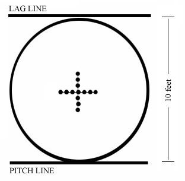

Marble Games
There is some terminology that should be explained when it comes to talking about marbles. Here is a short list of some terms to know:
- Mibs
- The marbles you shoot at. Sometimes also referred to as ducks
- Mibster
- The name for a person who plays marbles
- Keeps
- When you are playing a marble game for Keeps, then the winner of the game is allowed to take one of the loser's marbles.
- "For fair" or Fairsies
- Conversely, when a game is played "for fair", then there is no stakes, play for fun!
- Shooter
- The marble you shoot with, usually shooters are larger than normal marbles
- Taw
- The marble you are shooting with, also called the shooter
- Taw line
- The line you shoot behind
- Knuckling Down
- Resting the knuckles on the ground durign the act of shooting.
Types of Marble Games
Now that you know some useful marble terms, take a look at some types of games you can play with marbles! Note that this list is not comprehensive, and there are plenty more games than just the ones listed here.
Ringer (or Ring Taw)
RINGER is played in a ring ten (10) feet in diameter, with thirteen (13) marbles arranged in the center of a cross. The object is to shoot these marbles out of the ring. The player shooting the largest number of marbles out of the ring in any game is the winner of that game. No less than two and no more than six can play in one game, except that in the final championship matches only two play. In preliminary eliminations as many as six may play in one game. All play is for fair and marbles must be returned to the referee after each game. You can read more about the rules of Ringer at americantoymarbles.com
Cherry Pit
Cherry pit is a reverse variant of Ring Taw. A hole is dug in the center of a ringer circle before play begins. Each player places a number of marbles around the hole so that there is about a dozen marbles surrounding the hole. Players take turns trying to knock marbles into the hole. Like Ring Taw, as long as marbles are knocked into the hole and the taw remains in the ring, players may continue to shoot. If a taw goes into the hole, the owner must forfeit a number of marbles and place them around the hole to 'buy back' his shooter.
Tournament Play
Ringer is the preferred game for tournament play, from tournaments like the National Marbles Tournament in Wildwood New Jersey. It is also played at the British and World Championship, which is an international tournament that has team style play. 49 ducks are placed in the center of the ring, and mibsters shoot into the group with a "tolley" (British slang for shooter) and fight to be the first team to score 25 points.
Hundreds
A game for two players. Draw a small circle or make a small hole a suitable distance from the shooting spot. Both players shoot a marble towards the circle. If both or neither marble stops within the circle both players shoot again. If, however, only one player’s marble stops within the circle, that player scores 10 points and goes on shooting, scoring 10 points each time his marble stops in the circle. This continues until he has scored 100 or until he misses. When he misses the turn passes to his opponent who shoots and scores until he misses. The first player to reach 100 points is the winner and the loser hands over a predetermined number of marbles.
Drops (or Dropsies)
Drops is a marble game that can be played with up to 6 players, and the objective of the game is to knock the most marbles out of the ring. To prepare the playing field, a ring is drawn with a diameter of roughly 18 inches. Then, some number of target marbles are placed within that ring, preferrably mibs. Players will use their own shooter marble to knock marbles out of the ring. However instead of shooting the marbles on the ground, marbles are instead dropped from shoulder height down at the ring. Players will stand with their toes to the line of the ring, and try to knock marbles out of the ring with this method of dropping them.
At the end of each player's turn, they must pick up their own marbles and then move away from the ring. Then the next player can take their turn, standing toes to the line with the ring.
For each marble knocked out of the ring by a player, they are credited with one point. When all the marbles within the ring are knocked out, points are counted up and the player with the most points is declared the winner.